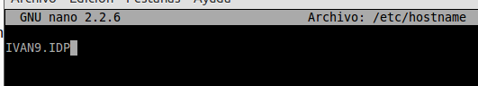
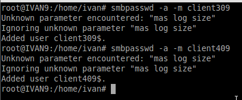
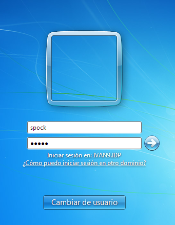

- Módulo: Administración de Sistemas Operativos
- Título del trabajo PDC Samba
- Componentes del grupo: Iván José Hernández Regalado
- Curso Académico: 2014/2015
- Fecha de entrega: 18 de Marzo de 2015
A partir de la práctica anterior vamos realizar la actual. Comenzamos cambiando el nombre de la máquina y la IP de la siguiente manera.

Ahora como ya tenemos instalado de la práctica anterior el samba solo vamos a crear el fichero de configuración para convertirlo en PDC. El fichero tendrá el siguiente contenido.
Debemos comprobar que existen las siguientes carpetas que usará el archivo de configuración, sino existen las creamos.
Pasamos con la creación del grupo para las máquinas y los usuarios de las máquinas. Y los agregamos como usuarios de samba.

Ahora creamos las cuentas y los grupos que usarán las máquinas agregadas anteriormente. Los creamos como especifíco a continuación. Primero los creamos en local, los quitamos del inicio de sesión y los añadimos a usuarios samba.
A continuación creamos las carpetas para cada usuario agregado en el paso anterior y les ponemos su propietario correspondiente.
Primero configuramos la IP y el nombre de la máquina usando el nombre de máquina agregado en el servidor. Y comprobamos que tenemos conexión con el servidor.
Ahora vamos a añadir el cliente al dominio. NOTA: en windows 7 habia un error en los registros a la hora de añadir el dominio por lo que vamos a seguir los pasos del siguiente enlace "http://www.mikroways.net/2009/12/05/problema-con-windows-7-y-dominio-samba/". Además añadimos la IP del servidor con su nombre en el archivo de hosts.
Una vez realizado lo anterior vamos a intentar unirnos al dominio usando el usuario root del servidor, tener en cuenta que el usuario tenemos que añadirlo a samba con "smbpasswd -a root".
Tras unirnos al dominio vamos a reiniciar el sistema e intentar conectarnos con un usuario que hayamos creado en el servidor que sirva de usuario samba, por ejemplo el usuario spock.
